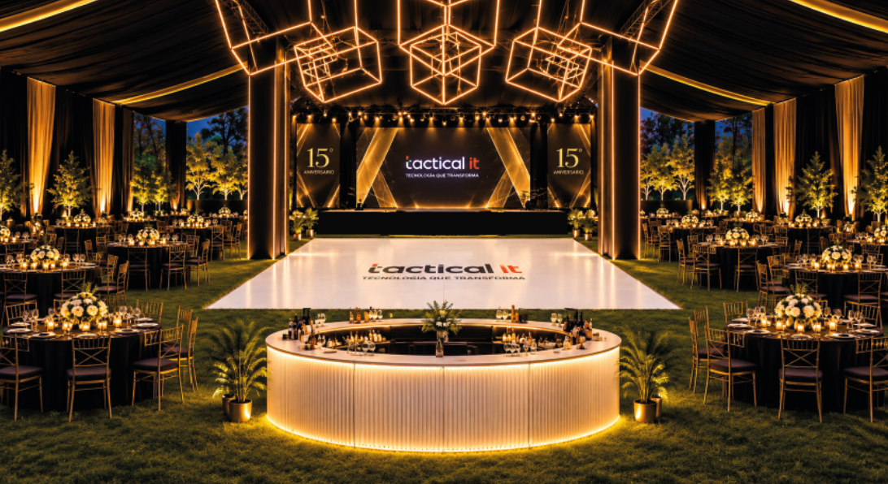
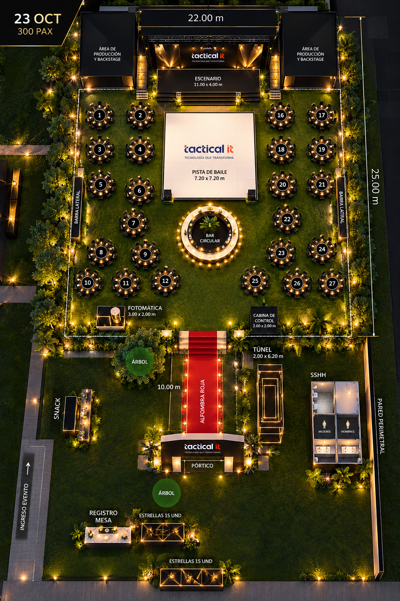
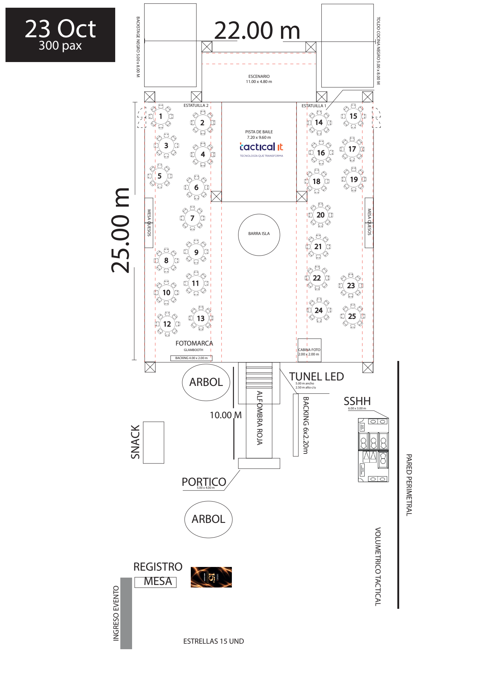
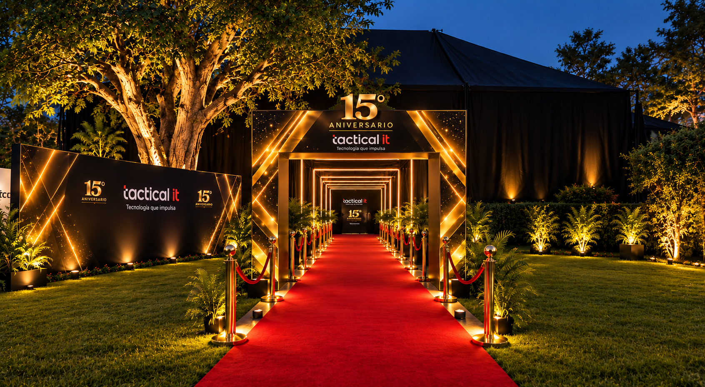
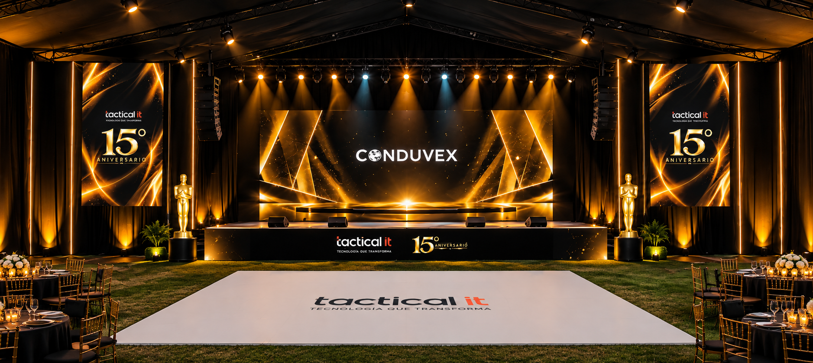

La entrada, la puesta en escena y los espacios de encuentro del aniversario de Tactical IT, reunidos en una presentación visual.
Explorar en 3D ↓Gira con el ratón o el dedo. Usa la rueda o dos dedos para acercarte. Con teclado: flechas para girar, +/− para zoom e Inicio para restablecer.
Cargando modelo 3D…
Modelo conceptual provisional. Escenario y pista toman las medidas del plano. Posiciones de mesas trazadas de forma aproximada; mobiliario, alturas de cubierta, iluminación y túnel son representaciones esquemáticas donde faltan detalles. No es un plano de fabricación ni un cálculo lumínico.
Una alfombra roja conecta el acceso con el salón. La iluminación cálida recorre el túnel, los árboles y el escenario; el dorado acompaña la identidad del aniversario.
La barra isla organiza el espacio social y la pista mantiene una relación directa con el escenario.

Compara la intención visual con la distribución acotada. Selecciona una fecha y amplía cualquiera de las vistas.


Revisión pendiente: el render del 23 muestra 27 mesas, escenario de 11 × 4 m y pista de 7,20 × 7,20 m. El plano indica 25 mesas, escenario de 11 × 4,80 m y pista de 7,20 × 9,60 m. Las métricas de esta presentación siguen provisionalmente el plano.

Pórtico, registro, alfombra roja y túnel LED forman la secuencia de llegada. El backing incorpora la identidad del aniversario.

Escenario con pantalla central, elementos laterales y pista al frente. Los renders comunican la intención visual; sus medidas deben reconciliarse con el plano.
| Elemento | Dato del plano |
|---|---|
| Escenario | 11 × 4,80 m |
| Pista de baile | 7,20 × 9,60 m |
| Pórtico | 5 × 4 m |
| Alfombra roja | 10 m de recorrido |
| Backing de ingreso | 6 × 2,20 m |
| Cabina de foto | 2 × 2 m |
| Backstage y cocina | 5 × 8 m cada zona |
El túnel figura con 5 m de ancho y 2,50 m de alto por módulo en el plano; el render rotula 2 × 6,20 m. El backing Glambooth aparece de 4 × 2 m en plano y de 4 × 2,20 m en el nombre del arte. Su geometría final está pendiente.
Se muestran elementos presentes en las fuentes del evento. No está confirmado qué elementos corresponden a cada proveedor. No se asignan metrados LED, potencia ni cantidades de luminarias sin un detalle técnico.
Plano “PLANO TACTICAL IT 23 y 29 OCTUBRE.pdf”, revisión de Drive del 22 de octubre; renders “[Tactical IT] Render evento y plano.pptx”, revisión del 21 de octubre. Los videos y artes de producción están inventariados y pendientes de revisión de contenido.